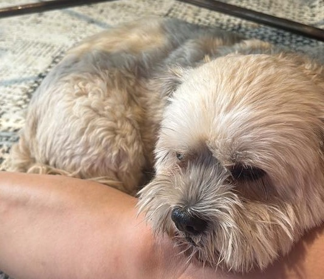

Pitz Stop
12-10-2023

היום התעוררתי מתחת למיטה זרה... בבוקר, הייתי בעבודה של מיכל ואז נסענו באוטו כדי לבקר את ההורים שלה, מצאתי פינה חמה מתחת לספה וקיבלתי חטיף כי הייתי כלב טוב
-
חוץ מזה הרחתי הרבה דברים מעניינים:
- קצת קקי
- אחד צ’יוואווה
- שני שיצ׳ו
- סנדוויץ טונה שהתקלקלה לפני יומיים
- ואת צ׳ארלי שהגיעה במצב רוח לוחמני
גם ביקרנו ב״סילון״ ומיכל שמה שיר יפה של בוב דילן. אני כבר קצת עייף, ותיכף אלך לישון:). אוי לא! הדודה המשוגעת שוב רוצה שנצא לטיול. אני מתגעגע לאמא, נשיקות וליקוקים !